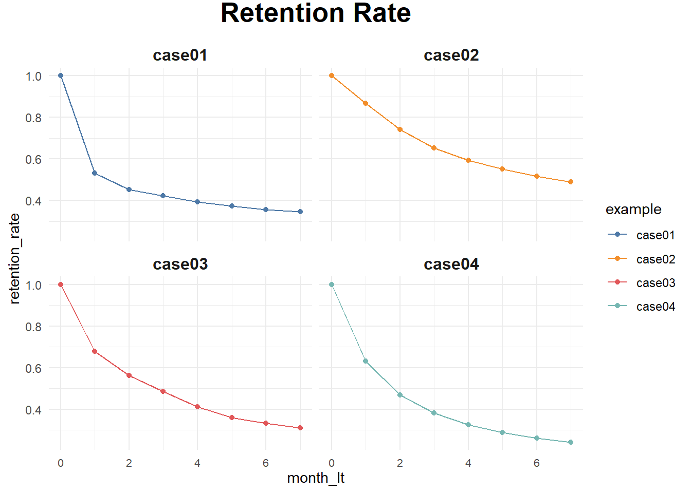

13 Customer Lifetime Value (CLV)
also known as Lifetime Value (LTV)
Bain & Comapny customer value model
“A year’s projected business gives a number that is normally about half of a customer’s full lifetime value, although that can vary by industry.” (V. Kumar, Petersen, and P.Leone 2007)
(V. Kumar et al. 2008) CLV model
\[ CLV_i = \sum_{j = T+1}^{T+N} \frac{p(Buy_{ij}=1)\times \hat{CM}_{ij}}{(1+r)^{j-T}} - \frac{\hat{MC}_{ij}}{(1-r)^{j-T}} \]
where
- \(CLV_i\) = lifetime value for customer i,
- \(p(Buy_{ij})\) = predicted probability that customer i will purchase in period j,
- \(CM_{ij}\) = predicted contribution margin provided by customer i in period j,
- \(MC_{ij}\) = predicted marketing costs directed toward customer i in period j,
- \(j\) = index for time periods (semiannual or annual)
- \(T\) = the end of the calibration or observation time frame (usually 1 year projection),
- \(N\) = total number of prediction periods,
- \(r\) = semiannual discount factor (e.g., 0.07238 (V. Kumar et al. 2008) = 15% annual rate)
13.1 Example
This example is subscription customers by Sergey Bryl’ in which he adapted model Fader and Hardie (2007)
## ── Attaching core tidyverse packages ──────────────────────── tidyverse 2.0.0 ──
## ✔ dplyr 1.1.1 ✔ readr 2.1.4
## ✔ forcats 1.0.0 ✔ stringr 1.5.0
## ✔ ggplot2 3.4.2 ✔ tibble 3.2.1
## ✔ lubridate 1.9.2 ✔ tidyr 1.3.0
## ✔ purrr 1.0.1
## ── Conflicts ────────────────────────────────────────── tidyverse_conflicts() ──
## ✖ dplyr::filter() masks stats::filter()
## ✖ dplyr::lag() masks stats::lag()
## ℹ Use the conflicted package (<http://conflicted.r-lib.org/>) to force all conflicts to become errors##
## Attaching package: 'reshape2'
##
## The following object is masked from 'package:tidyr':
##
## smiths##
## Attaching package: 'MLmetrics'
##
## The following object is masked from 'package:base':
##
## Recall
# retention rate data
df_ret <- data.frame(month_lt = c(0:7),
case01 = c(1, .531, .452, .423, .394, .375, .356, .346),
case02 = c(1, .869, .743, .653, .593, .551, .517, .491),
case03 = c(1, .677, .562, .486, .412, .359, .332, .310),
case04 = c(1, .631, .468, .382, .326, .289, .262, .241)
) %>%
melt(., id.vars = c('month_lt'), variable.name = 'example', value.name = 'retention_rate')
ggplot(df_ret, aes(x = month_lt, y = retention_rate, group = example, color = example)) +
theme_minimal() +
facet_wrap(~ example) +
scale_color_manual(values = c('#4e79a7', '#f28e2b', '#e15759', '#76b7b2')) +
geom_line() +
geom_point() +
theme(plot.title = element_text(size = 20, face = 'bold', vjust = 2, hjust = 0.5),
axis.text.x = element_text(size = 8, hjust = 0.5, vjust = .5, face = 'plain'),
strip.text = element_text(face = 'bold', size = 12)) +
ggtitle('Retention Rate')
Prediciton when we only have values on certain months
# functions for sBG distribution
churnBG <- Vectorize(function(alpha, beta, period) {
t1 = alpha / (alpha + beta)
result = t1
if (period > 1) {
result = churnBG(alpha, beta, period - 1) * (beta + period - 2) / (alpha + beta + period - 1)
}
return(result)
}, vectorize.args = c("period"))
survivalBG <- Vectorize(function(alpha, beta, period) {
t1 = 1 - churnBG(alpha, beta, 1)
result = t1
if(period > 1){
result = survivalBG(alpha, beta, period - 1) - churnBG(alpha, beta, period)
}
return(result)
}, vectorize.args = c("period"))
MLL <- function(alphabeta) {
if(length(activeCust) != length(lostCust)) {
stop("Variables activeCust and lostCust have different lengths: ",
length(activeCust), " and ", length(lostCust), ".")
}
t = length(activeCust) # number of periods
alpha = alphabeta[1]
beta = alphabeta[2]
return(-as.numeric(
sum(lostCust * log(churnBG(alpha, beta, 1:t))) +
activeCust[t]*log(survivalBG(alpha, beta, t))
))
}
df_ret <- df_ret %>%
group_by(example) %>%
mutate(activeCust = 1000 * retention_rate,
lostCust = lag(activeCust) - activeCust,
lostCust = ifelse(is.na(lostCust), 0, lostCust)) %>%
ungroup()
ret_preds01 <- vector('list', 7)
for (i in c(1:7)) {
df_ret_filt <- df_ret %>%
filter(between(month_lt, 1, i) == TRUE & example == 'case01')
activeCust <- c(df_ret_filt$activeCust)
lostCust <- c(df_ret_filt$lostCust)
opt <- optim(c(1, 1), MLL)
retention_pred <- round(c(1, survivalBG(alpha = opt$par[1], beta = opt$par[2], c(1:7))), 3)
df_pred <- data.frame(month_lt = c(0:7),
example = 'case01',
fact_months = i,
retention_pred = retention_pred)
ret_preds01[[i]] <- df_pred
}## Warning in log(churnBG(alpha, beta, 1:t)): NaNs produced
## Warning in log(churnBG(alpha, beta, 1:t)): NaNs produced## Warning in log(survivalBG(alpha, beta, t)): NaNs produced## Warning in log(churnBG(alpha, beta, 1:t)): NaNs produced## Warning in log(survivalBG(alpha, beta, t)): NaNs produced## Warning in log(churnBG(alpha, beta, 1:t)): NaNs produced## Warning in log(survivalBG(alpha, beta, t)): NaNs produced## Warning in log(churnBG(alpha, beta, 1:t)): NaNs produced## Warning in log(survivalBG(alpha, beta, t)): NaNs produced
ret_preds01 <- as.data.frame(do.call('rbind', ret_preds01))
ret_preds02 <- vector('list', 7)
for (i in c(1:7)) {
df_ret_filt <- df_ret %>%
filter(between(month_lt, 1, i) == TRUE & example == 'case02')
activeCust <- c(df_ret_filt$activeCust)
lostCust <- c(df_ret_filt$lostCust)
opt <- optim(c(1, 1), MLL)
retention_pred <- round(c(1, survivalBG(alpha = opt$par[1], beta = opt$par[2], c(1:7))), 3)
df_pred <- data.frame(month_lt = c(0:7),
example = 'case02',
fact_months = i,
retention_pred = retention_pred)
ret_preds02[[i]] <- df_pred
}## Warning in log(churnBG(alpha, beta, 1:t)): NaNs produced## Warning in log(churnBG(alpha, beta, 1:t)): NaNs produced
## Warning in log(churnBG(alpha, beta, 1:t)): NaNs produced
## Warning in log(churnBG(alpha, beta, 1:t)): NaNs produced
## Warning in log(churnBG(alpha, beta, 1:t)): NaNs produced
## Warning in log(churnBG(alpha, beta, 1:t)): NaNs produced
## Warning in log(churnBG(alpha, beta, 1:t)): NaNs produced
ret_preds02 <- as.data.frame(do.call('rbind', ret_preds02))
ret_preds03 <- vector('list', 7)
for (i in c(1:7)) {
df_ret_filt <- df_ret %>%
filter(between(month_lt, 1, i) == TRUE & example == 'case03')
activeCust <- c(df_ret_filt$activeCust)
lostCust <- c(df_ret_filt$lostCust)
opt <- optim(c(1, 1), MLL)
retention_pred <- round(c(1, survivalBG(alpha = opt$par[1], beta = opt$par[2], c(1:7))), 3)
df_pred <- data.frame(month_lt = c(0:7),
example = 'case03',
fact_months = i,
retention_pred = retention_pred)
ret_preds03[[i]] <- df_pred
}
ret_preds03 <- as.data.frame(do.call('rbind', ret_preds03))
ret_preds04 <- vector('list', 7)
for (i in c(1:7)) {
df_ret_filt <- df_ret %>%
filter(between(month_lt, 1, i) == TRUE & example == 'case04')
activeCust <- c(df_ret_filt$activeCust)
lostCust <- c(df_ret_filt$lostCust)
opt <- optim(c(1, 1), MLL)
retention_pred <- round(c(1, survivalBG(alpha = opt$par[1], beta = opt$par[2], c(1:7))), 3)
df_pred <- data.frame(month_lt = c(0:7),
example = 'case04',
fact_months = i,
retention_pred = retention_pred)
ret_preds04[[i]] <- df_pred
}
ret_preds04 <- as.data.frame(do.call('rbind', ret_preds04))
ret_preds <- bind_rows(ret_preds01, ret_preds02, ret_preds03, ret_preds04)
df_ret_all <- df_ret %>%
select(month_lt, example, retention_rate) %>%
left_join(., ret_preds, by = c('month_lt', 'example'))
ggplot(df_ret_all, aes(x = month_lt, y = retention_rate, group = example, color = example)) +
theme_minimal() +
facet_wrap(~ example) +
scale_color_manual(values = c('#4e79a7', '#f28e2b', '#e15759', '#76b7b2')) +
geom_line(size = 1.5) +
geom_point(size = 1.5) +
geom_line(aes(y = retention_pred, group = fact_months), alpha = 0.5) +
theme(plot.title = element_text(size = 20, face = 'bold', vjust = 2, hjust = 0.5),
axis.text.x = element_text(size = 8, hjust = 0.5, vjust = .5, face = 'plain'),
strip.text = element_text(face = 'bold', size = 12)) +
ggtitle('Retention Rate Projections')## Warning: Using `size` aesthetic for lines was deprecated in ggplot2 3.4.0.
## ℹ Please use `linewidth` instead.
## This warning is displayed once every 8 hours.
## Call `lifecycle::last_lifecycle_warnings()` to see where this warning was
## generated.
calculate the average LTV for case03 based on two historical months with a forecast horizon of 24 months and a subscription price of $1
### LTV prediction ###
df_ltv_03 <- df_ret %>%
filter(between(month_lt, 1, 2) == TRUE & example == 'case03')
activeCust <- c(df_ltv_03$activeCust)
lostCust <- c(df_ltv_03$lostCust)
opt <- optim(c(1, 1), MLL)
retention_pred <- round(c(survivalBG(alpha = opt$par[1], beta = opt$par[2], c(3:24))), 3)
df_pred <- data.frame(month_lt = c(3:24),
retention_pred = retention_pred)
df_ltv_03 <- df_ret %>%
filter(between(month_lt, 0, 2) == TRUE & example == 'case03') %>%
select(month_lt, retention_rate) %>%
bind_rows(., df_pred) %>%
mutate(retention_rate_calc = ifelse(is.na(retention_rate), retention_pred, retention_rate),
ltv_monthly = retention_rate_calc * 1,
ltv_cum = round(cumsum(ltv_monthly), 2))
# average LTV of $9.33. actual data for the observed periods (from 0 to 2nd months) and the predicted retention for the future periods (from 3rd to 24th months)13.2 Referral value (CRV)
“Referrals made by customers after a referral-incentive marketing campaign can be attributed to that campaign for about a year.” (V. Kumar, Petersen, and P.Leone 2007). Hence, we usually count those referrals made after one year of a campaign.
2 types of referral:
- Type-one referral: Would not join without referral.
- Type-two referral: still join without referral.
(V. Kumar, Petersen, and P.Leone 2007) estimated that each customer made about half type-one and half type-two referrals.
Referral value = PV(Type-one referrals) + PV(Type-two referrals)
where
- PV(type-two referrals) = the prevent value of the savings in acquisition costs.
\[ CRV_i = \sum_{t =1}^{T} \sum_{y = 1}^{n1} \frac{A_{ty} - a_{ty} - M_{ty} + ACQ1_{ty}}{(1+r)^t} + \sum_{t=1}^{T} \sum_{y = n1+1}^{n2} \frac{ACQ2_{ty}}{(1+r)^t} \]
where
- T = the number of periods that will be predicted into the future (e.g., typically 1 year)
- \(A_{ty}\) = the gross margin contributed by customer y who other otherwise would not have bought the product,
- \(a_{ty}\) = the cost of the referral for the customer y (this is what you set up)
- \(n1\) = the number of customers who would not join without the referral,
- \(n2-n1\) = the number of customers who would have joined anyway,
- \(M_{ty}\) = the marketing costs needed to retain the referred customers,
- r = semiannual discount factor ((V. Kumar et al. 2008) used .07238 = 15% annual rate)
- \(ACQ1_{ty}\) = the savings in acquisition costs from customers who would not join without the referral,
- \(ACQ2_{ty}\) = the savings in acquisition cost from customers who would have joined anyway.
Customers with high CLV does not guarantee high CRV (V. Kumar, Petersen, and P.Leone 2007). Hence, (V. Kumar, Petersen, and P.Leone 2007) proposed the customer value matrix